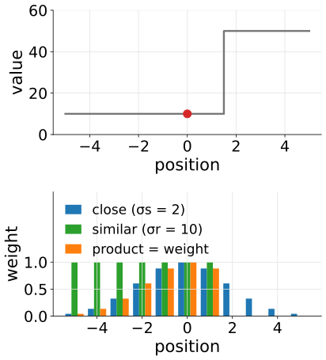
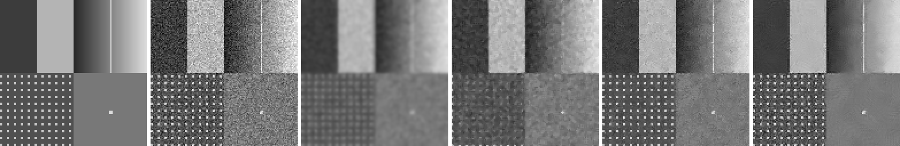
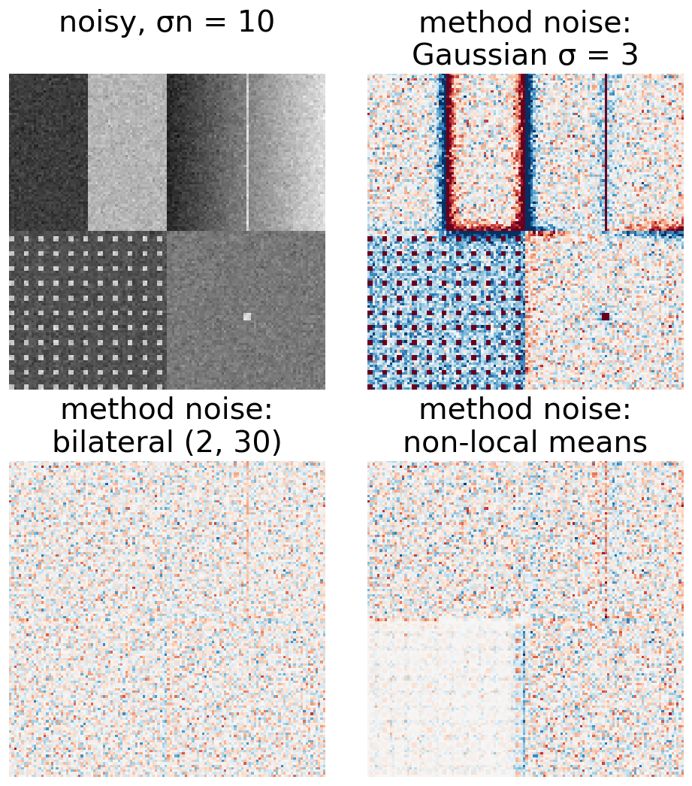
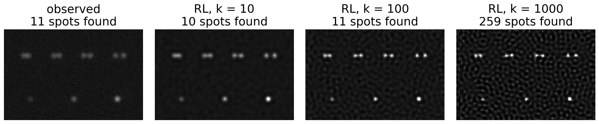

When there is nothing to un-blur, only noise: the classical denoisers, each judged by what it destroys.
Gaussian, median, bilateral, non-local means; Wiener with no blur.
The method noise check: what did the filter remove?
A restored image is an estimate: which measurements survive restoration (total intensity), which do not (peaks, sizes, separations, counts), and what to report.
Slides titled The math give the formulas and proofs; the ideas are complete without them.
With PSF = a single point (H = 1), Wiener and Tikhonov become denoisers: gain 1/(1 + 1/\mathrm{SNR}(f)), a low-pass filter chosen by the SNR per frequency.
The math: the median minimises the absolute deviation
The mean minimises the sum of squared deviations \sum_i (x_i - m)^2; the median minimises the sum of absolute deviations
\operatorname*{arg\,min}_m \sum_i |x_i - m| .
The derivative of \sum_i|x_i - m| with respect to m is (\#\{x_i < m\}) - (\#\{x_i > m\}): zero (changing sign) when as many values lie below m as above it, the median.
An outlier moved from 200 to 2000 changes the squared cost hugely (and pulls the mean), but only adds to one side of the count: the median does not move.
This is the \ell^1 versus \ell^2 difference that also separates total variation from the roughness penalty (regularisation); in general it is the subject of the sparse representations day.
Bilateral: close and similar
Average the neighbours, but weight each by how close it is (σs, pixels) and how similar its value is (σr, grey levels):
Across an edge the neighbours on the other side are dissimilar and get almost no weight: the edge stays sharp.
Three pixels 10, 10, 50 around a centre of 10, σr = 10: the 50 gets e^{-40^2/(2 \cdot 10^2)} = e^{-8} = 0.0003 of the weight of a 10.
Fails when the noise ≈ the edge height: noise then looks like edges and is kept, or σr is raised and edges blur. Large σr on a noisy ramp gives flat patches: a cartoon.

Top: a row with a step; the red pixel is being denoised. Bottom: each neighbour’s weight for closeness, similarity, and their product; across the step it is almost 0.
Non-local means: similar patches
Average pixels whose whole patch (say 3 × 3 or 5 × 5 around them) looks like the patch around the pixel being denoised, wherever they lie in a search window:
Repetitive structure (a lattice, a texture, many similar cells) finds many good matches: strong averaging without blurring the pattern.
Unique fine detail has no match; with a large h (tolerance), it is averaged with dissimilar patches and fades.
Cost: (search window) × (pixels), with box sums for the patch distances.

Test image (step, ramp crossed by a 1-pixel line, dot lattice, one unique spot), noise σn = 20. From the left: truth, noisy, Gaussian σ = 1.5, median 3 × 3, bilateral (σs 2, σr 30), non-local means (patch 5 × 5, search 11 × 11, h = 20).
The math: bilateral and non-local means weights
Both are weighted means \hat I_p = \sum_q w_{pq} I_q \big/ \sum_q w_{pq}, with different weights:
Bilateral: w_{pq} = \exp\!\big(-\|p - q\|^2/2\sigma_s^2\big)\exp\!\big(-(I_p - I_q)^2/2\sigma_r^2\big) over a window of radius about 2\sigma_s.
Non-local means: w_{pq} = \exp\!\big(-d^2(P_p, P_q)/h^2\big), with d^2 the mean squared difference of the patches P_p, P_q, over a search window.
Per-offset computation: for each offset \delta in the search window, the squared differences (I_r - I_{r + \delta})^2 are summed over every patch with an integral image; the cost does not depend on the patch size.
With noise σn, even identical patches differ by d^2 \approx 2\sigma_n^2; so h must be of the order of σn or larger.
Poisson noise depends on the signal: either use a method that knows it (Richardson–Lucy, Poisson data terms), or transform the image so the noise variance becomes constant first (camera noise unit).
Learned restoration: networks trained on noisy/clean pairs, or even on single noisy images, now beat all of these. Trained to “look right”, they can invent structure that was never in the data. The modern deep learning day shows when (restoration with a generative prior), with Wiener from this day as the honest baseline.
Method noise: what did the filter remove?
Method noise = noisy − denoised. If the filter removed only noise, it looks like pure noise: no structure.
An edge, a line or the lattice visible in the method noise = signal the filter removed.
Gaussian σ = 3 on the test image (σn = 10): the method noise has RMS 9.9 in flat regions (≈ σn, fine) but jumps to +72 and −58 at the step: the edge was blurred away.
PSNR against a clean truth needs the truth; the method noise needs only the noisy image. Use it on real data.

The test image (σn = 10) and the method noise of three filters (red: brightness removed, blue: added; ±40 grey levels). The Gaussian removed the step, line and lattice.
Try it: denoisers
A restored image is an estimate
It depends on the PSF, the method, λ or the stopping point. Change any of them and the image changes.
It improves contrast and separation, but cannot recover what lies beyond the cut-off (image formation day: invisible objects stay invisible).
Its noise is no longer independent between pixels, and no longer Poisson: the camera noise unit’s rules for error bars do not apply to it.
So: what happens to the numbers we measure on it?

A test field (Airy PSF, NA 1.0, 1000 photons at 1): bead pairs at 0.8–1.5 Rayleigh distances, spots of flux 1 : 2 : 4. The same data restored with Richardson–Lucy, stopped at 10, 100 and 1000 iterations: three different estimates. Spots found: local maxima above a fixed threshold (truth: 11).
What happens to measurements
measurement
after restoration
why
total intensity over a region larger than the PSF
kept (RL exactly; roughness-penalised Tikhonov exactly; Wiener and energy-penalised Tikhonov slightly shrink it)
flux is the f = 0 coefficient
peak intensity
rises, non-linearly, and depends on the iterations
light is moved into the centre
size (FWHM) near the resolution limit
shrinks with iterations to a floor set by the method, not by the object
restoration stops at the noise
separation of close objects
biased, most when the dip between them is weak
counts of objects
speckles and split objects add, ringing adds rims
In the demo (spots of flux 1 : 4, 3000 photons): RL after 100 iterations gives an integrated ratio of 4.00 but a peak ratio of 6.20; the raw image gives 3.86 and 4.13.
The math: flux preservation
RL: \sum_j x_j^{\text{new}} = \sum_j x_j\sum_i A_{ij}\frac{y_i}{(A\mathbf x)_i} = \sum_i \frac{y_i}{(A\mathbf x)_i}\sum_j A_{ij}x_j = \sum_i y_i, every iteration (no background).
Linear filters: the total intensity is the f = 0 Fourier coefficient, \hat X(0) = \sum_j x_j, and the filter multiplies it by its gain at f = 0 (with H(0) = 1):
Over a region rather than the whole image, flux is kept only approximately: light moves across the region’s boundary by about the PSF’s width, so the region must be larger than the PSF.
Try it: what may be measured
What to do, and what to report
Segment or detect on the restored image if it helps (better contrast, separated objects).
Measure intensities on the raw image (offset- and flat-field-corrected), inside the masks found.
Validate any measurement made on restored data with a known-truth test: beads, a phantom, the same microscope and noise.
Report the method, the PSF (measured or computed), λ or the number of iterations; show the raw data next to the result.
Never compare images restored with different settings, and keep the raw data.
Error bars and statistics of measurements: the evaluation day (replicates).
Summary
With H = 1, Wiener and Tikhonov are low-pass denoisers. Gaussian blurs edges; median removes outliers, keeps steps, eats thin lines; bilateral keeps edges, cartoons at high noise; non-local means loves repetition, smears unique detail.
Method noise (noisy − denoised) should look like pure noise; structure in it is removed signal.
Learned restoration is better and can invent structure (modern deep learning day, diffusion).
A restored image is an estimate: total intensity over a region larger than the PSF is kept; peaks, sizes, separations and counts change with the method and the stopping point.
Detect on the restored image, measure on the raw, validate with known truth, report everything.